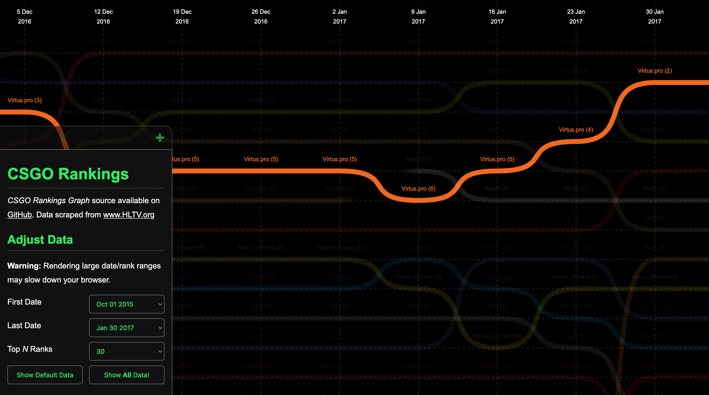
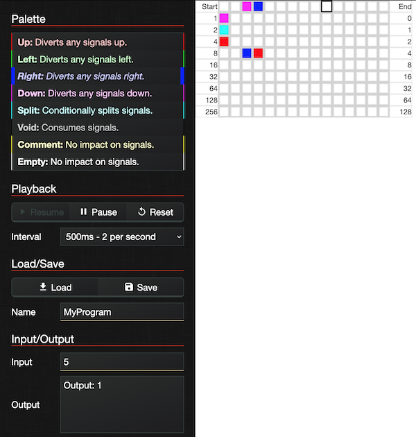
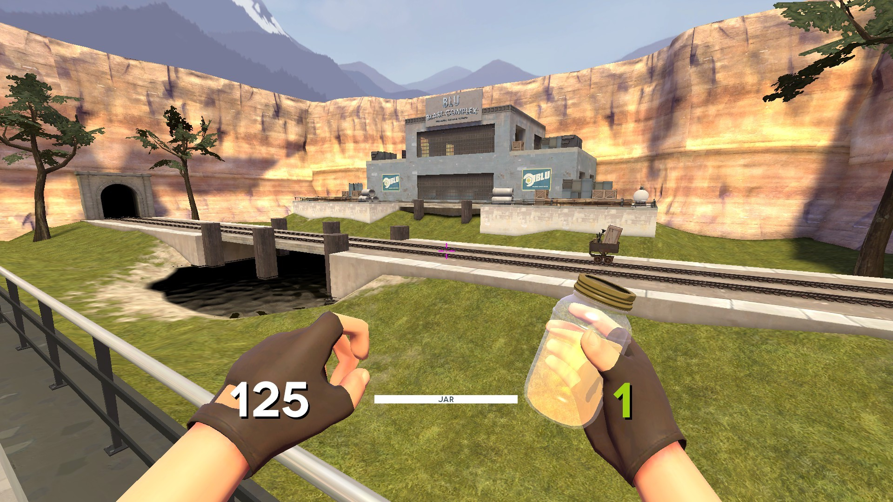
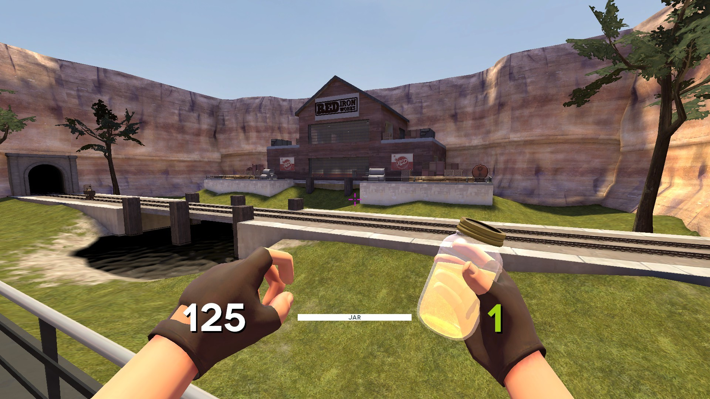
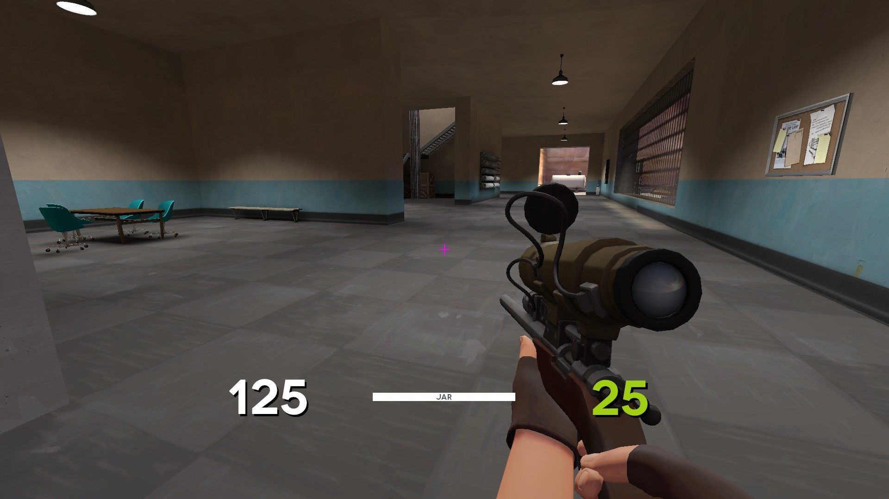

About
Work Experience
- Software Developer at Lighthouse Systems. Responsibilities include working on HTML5 UI overhaul project and serving as Scrum Master.
Education
- BSC with first-class honours from the University of Hull. Dissertation based on using genetic algorithms to optimize finite state machines for video game artificial intelligence.
- A Levels in Maths, Physics and Applied ICT, AS Level in Further Maths.
Interests
- Software development, open source and new web technologies. Loves working with C#, TypeScript and CSS, and working on documentation, code quality and data visualization projects.
- Video games including clan server hosting and traveling to spectate at tournaments abroad.
Posts
Barrelsby
Node.js command line utility to automatically generates index.ts files for typescript codebases.
- TypeScript
- Continuous Integration
- Unit Testing
- NPM
CSGO Rankings Graph
Charts HLTV rankings of professional teams in the game Counter-Strike: Global Offensive.

- TypeScript
- SVG
- Data Visualization
- Website Scraping
- Gaming
DatabaseObjects
Library of utilities and classes for inspecting database schemas.
- C#
- SQL
- Nuget
- Unit Testing
Milligrid
Responsive CSS grid system built using flexbox and based on Milligram.

- Sass
- CSS
- Continuous Integration
- NPM
Quadrilactic
Browser-based game about a square jumping and bouncing through space.

- HTML5 Canvas
- TypeScript
- Gaming
Dots
Animated HTML5 canvas effect previously used on this page.

- HTML5 Canvas
- JavaScript
TSFluff
Joke TSLint rules that make TypeScript programming a painful experience.
- TypeScript
- Programming Languages
BMProg
Bitmap based programming "language" which uses pixels of images as instructions and outputs gif files showing execution.

- C#
- Image Processing
- Programming Languages
BFInterpreter
Interpreter for the Brainf*ck esoteric programming language.
- C#
- Programming Languages
ChromosomeLibrary
Provides bit-string crossover and mutation functionality for use in genetic algorithm projects.
- C#
- Genetic Algorithms
sn_caldera
sn_caldera_fix is a map for the "snipers only" gamemode in Team Fortress 2. It was built in the Hammer editor.



- Gaming
10 Second Dirt
"10 Second Dirt" is a Trackmania 2020 campaign I created featuring 25 different dirt maps with Author Times below 10 seconds.
You can play it by searching for "10 second dirt" in the in-game library.


- Gaming
Dwitter
Dwitter is a code-golfing social network that gives you:
- An HTML5 canvas
- A maximum of 140 characters to write the body of a render function.
- A couple of helper variables and functions (
tisdeltaTime,xis theCanvasRenderingContextetc).
The goal is to try and write a minimal render function that will make something cool appear and/or animate on the canvas. To give you an idea of whats achievable, here's the default initial render function provided by the site as an example:
function u(t) {
c.width = 1920; // clear the canvas
for (i = 0; i < 9; i++) x.fillRect(400 + i * 100 + S(t) * 300, 400, 50, 200); // draw 50x200 rects
} // 112/140
Default Remixes
One common theme on the website is to "remix" the original default function in an interesting way - for example here's a version I made where the animation squashes up against the bottom of the screen:
function u(t) {
for(c.width|=i=j=k=l=0;i<9;i++,x.fillRect(910-l/2,Math.min(j,k),200+l,50))j=400+i*99+S(t)*300,k=630+i*50,l=Math.max(j-k,0),x.fillStyle=R(l)
} // 140/140 3 Nov 2019 01:35
You can see a few simple code-golfing tricks at play here:
- Using the syntax for declaring for loops to initialise a big wad of variables at once.
- Bolting multiple statements together using the comma operator.
- Using the Bitwise OR assignment operator to assign the canvas a width of
0, effectively clearing it ready for the next frame.
Here's another remix of the default function, where the animation behaves like a pen drawing on scrolling paper:
function u(t) {
with(x)for(a=i=0,j=200,fillStyle='#fff',fillRect(0,0,2e3,199),drawImage(c,0,1);i<j;i+=20,a=i+S(t)*60,fillStyle=R(a))fillRect(400+a*5,0,50,j)
} // 140/140 2 Nov 2019 22:25
To achieve the scrolling effect I am redrawing the canvas to itself each frame 1 pixel down. The top portion is then cleared to make way for the next frame of the animation.
Again, there's a couple more code-golfing techniques on show:
- The
withstatement allows shorter references to the canvas in multiple places. - Scientific notation helps shrink down longer number literals.
Ribbon 3D Effect
Despite having such a limited toolset, with some imagination and perseverance you can get some interesting results. I managed to create what looks like a 3D ribbon, but in fact its just some oscillating rectangles, with the size and movement adjusted by their distance down the screen:
function u(t) {
for(c.width|=i=j=k=0;i<99;i++,j=i*13,k=S(i/2-t)*i+99,x.fillStyle=R(k))x.fillRect(960-j/2,j-k,j,99)
} // 98/140 3 Nov 2019 00:35
Quine
A quine is a computer program which takes no input and produces a copy of its own source code as its only output.
Quines are another popular category of posts on dwitter. For mine I went through a few iterations before arriving at this:

function u(t) {
with(x){fillStyle="#222"
fillRect(0,0,2e3,2e3)
fillStyle="#fff"
font="5em Courier"
u+=i=""
u.split`
`.map(l=>fillText(l,i++%8==0||99,i*99))}
} // 140/140 2 Nov 2019 16:11
This takes advantage of the fact that in JavaScript you can convert functions to strings, resulting in the original function's source code.
Unfortunately this dweet has since broken as it appears Dwitter now wraps your submitted code with some boilerplate, which then shows up in the output. This could be a good example of why converting functions to strings is an unreliable way to write code!

- HTML5 Canvas
- JavaScript
- Programming Languages
Celebrating Another Year of TypeScript
Published Oct 1, 2019I wrote this post as the inaugural entry for YouView's engineering blog in late 2019. The original is still available here. Thanks to my colleagues at YouView for assistance editing and refining this.
Today on October 1st, 2019 TypeScript is passing its 7th birthday. We get a lot of mileage out of TypeScript at YouView; we’ve been using it to build the latest version of our UI for over 4 years and have amassed over a hundred thousand lines of TypeScript code. To celebrate the language’s success, what better way to look back to where it all began and at how TypeScript has grown.

Setting The Scene
As the de facto language of the web, JavaScript (despite its marred reputation) was spreading and codebases were growing. Developers were resigning themselves to needing some way of creating JavaScript. Seeing that not even the ubiquitous JQuery would save them from writing questionable code, people were open to new languages and tools that might make coding a bit more pleasant.

JQuery code sample from “The jQuery Divide” — Rebecca Murphey (September 25th, 2010)
One such example of an alternative language is Coffeescript, a compile-to-JavaScript language with nice syntactic sugars, which was beginning to reach peak popularity. These alternatives each came with their own pros and cons, and even other teams at Microsoft were weighing in with their 2 cents (and taking a slight pot-shot at Google while they did so):
Some examples, like Dart, portend that JavaScript has fundamental flaws and to support these scenarios requires a “clean break” from JavaScript in both syntax and runtime. We disagree with this point of view. We believe that with committee participant focus, the standards runtime can be expanded and the syntactic features necessary to support JavaScript at scale can be built upon the existing JavaScript standard.
Enter TypeScript
After two years of internal development inside Microsoft, Version 0.8 of TypeScript was announced on 1st October, 2012, hosted on the (now defunct) codeplex. At release, the following quote was emblazoned over the TypeScript Homepage:
TypeScript is a language for application-scale JavaScript development.
TypeScript is a typed superset of JavaScript that compiles to plain JavaScript.
Any browser. Any host. Any OS. Open Source.
A critical promise from the very beginning is that your JavaScript code is already TypeScript. By creating a superset rather than a completely new language, Microsoft were reaching out to developers who were already knee-deep in large JavaScript codebases. Just drop this tool into your workflow, and some problems will be solved.

The quickstart guide posted alongside the initial release showcases some headline features (types annotations, interfaces and ES6 classes) as well as examples demonstrating how it would catch bugs:

While the example above looks (and compiles) like the TypeScript you know today, the feature-set at the time was much more limited. Major type-system features were yet to appear, such as Generics which wouldn’t show up until v0.9 in June 18th, 2013 around 8 months later. For what it’s worth, the error messages have improved since then as well.

Reception
Upon release it wasn’t immediately clear how powerful and popular TypeScript would become. You can get a cheap laugh looking back now at comments on the initial posts, such as this one posted just 12 minutes after the release on the 53 minute introductory video:
I’ll go on record as saying this is almost the dumbest idea ever. We already have a strongly typed language that can compile to idiomatic JavaScript. It’s called C#. Or Java. Or Lisp. Or C++.
There was plenty of praise for Microsoft’s new offering, but while it is funny to look back with hindsight on comments like this it does help highlight how many were skeptical of yet another tool professing to solve JavaScript’s woes.
Unsurprisingly for Microsoft at the time, another notable point was the lack of solid editor support outside of the Visual Studio ecosystem:
Developers use MacOS and Linux workstations to write the bulk of the code, and deploy to Linux servers.
But TypeScript only delivers half of the value in using a strongly typed language to Unix developers: strong typing. Intellisense, code completion and refactoring are tools that are only available to Visual Studio Professional users on Windows.
There is no Eclipse, MonoDevelop or Emacs support for any of the language features.
Early Steps
Coming up on a year after the initial v0.8 release, Microsoft dropped v0.9 into our laps with generics and enums being among the big-ticket features. During this early period in TypeScript’s life, releases were sporadic and small updates often targeted areas such as compiler performance and editor improvements.
Release details for v1.0 (released April 2nd, 2014) contain a surprising lack of language features, instead inviting community contributions to the project. In response to user feedback TypeScript’s development was migrated from the Microsoft-owned Codeplex to (then independent) GitHub around around 3 months later, where it remains to this day.

AtScript
Around this time Google had cottoned on to some of TypeScript’s growing reputation and at ng-conf Europe in October 2014 they announced a new Language of their own: AtScript.
In a pleasingly recursive fashion, AtScript would be a superset of TypeScript. Their goals were to add on features like annotations (later to become decorators) and introspection to help create a language that would be used to build Angular 2.0. Alas AtScript was short-lived, and on March 15th, 2015 Microsoft and Google announced they would be joining forces to integrate AtScript’s features into the core TypeScript language.

Future Features, Now
In addition to the language features added in the 1.x versions, TypeScript also began giving developers early access to future JavaScript syntax. Taking async/await as an example, initial support was included in TypeScript 1.6 (16th September, 2015), improved in version 1.7 and fully supported in v2.1 (8th November, 2016) ahead of its inclusion in major browsers or official release in ES2017.
Nowadays the team behind TypeScript will wait until the TC39 proposal has reached Stage 3. TC39 (short for Technical Committee 39) is the group responsible for managing which features make it into new versions of JavaScript (more formally known as ECMAScript) and the TypeScript team actively take part in the committee.
Some notable exceptions to the Stage 3 rule are some of the features promised to help replace the now abandoned AtScript. Decorators were included in v1.5 (20th July, 2015) and improved in v1.7 (30th November, 2015), however support for them has remained locked behind “experimental” compiler flags. The TC39 proposal has languished in Stage 2 for a while now, but has recently received renewed focus so watch this space.
Modern Process
TypeScript’s v2.0 release on 22nd September, 2016 could be considered the start of TypeScript’s modern era. Following this the release cadence has sped up and evened out, with at least 5 minor releases annually in the time since.
V2.0 was accompanied by another big change, the release of @types packages on npm. Prior to this if you wanted type definitions (essentially header files) for a third-party library there were a couple of options: Hope that the library had been distributed with the .d.ts files inside the package; or install a tool like TSD or its successor Typings to in turn grab them from the definitelytyped repository.

Counter to Microsoft’s past reputation, much of the process surrounding TypeScript’s development now happens in the open with community involvement. Skimming through the torrent of daily Github issues (totalling over 23000 at the time of writing) you can find meeting minutes about the language’s progress tagged under “Design Notes” or “Planning”, and the roadmap and design goals are easily accessible on the wiki.
Success and Spread
Over the years TypeScript has risen to be one of the most popular languages around. In Github’s 2018 Octoverse report TypeScript ranked as the 3rd fastest growing language, and the latest RedMonk language rankings placed TypeScript at number 10:
Three years ago at this time, TypeScript had just broken through to #26 after languishing in the thirties for years. This quarter […] the JavaScript superset capped off one of the more remarkable growth stories we have ever seen in these rankings, placing in the top ten for the first time after surging to #12 last quarter. […] The ubiquity of JavaScript coupled with the optional safety offered by TypeScript has proven to be a winning combination, and vaulted it directly into rare territory.
At this point TypeScript forms the foundation for a significant set of major projects: Angular, Redux, RxJS, MobX, InversifyJS, VsCode and GitHub’s desktop client all use the language at their core; and Deno (a fledgling hopeful successor to node) will support it by default.
Much of TypeScript’s success can be attributed to how discreetly it can work its way into JavaScript projects. A recent Microsoft blog post outlines how developers can “Upgrade to TypeScript Without Anybody Noticing”. Users of the text editor VSCode will already be getting compiler hints and Intellisense for dependencies on their JavaScript without necessarily realising TypeScript is the tool powering it all (a feature which unintentionally DDoS-ed npm upon release).
Looking to the future
In their latest roadmap the TypeScript team outline a holistic set of goals:
- Types on every desk, in every home, for every JS developer
- Productivity through strong tooling
- Approachability and UX
- Community engagement
- Infrastructure and engineering systems
For a bigger picture, the language’s Design Goals wiki page lists the goals and “non-goals” that shape the language.
In terms of language features, much of the exciting stuff entering the language will be coming by way of the TC39 group, for example optional chaining and the pipeline operator. By design, any progress in the JavaScript ecosystem feeds directly into the TypeScript language.
For the developer community there is no indication that TypeScript will stop growing in popularity. Two years ago prominent community member Basarat posted an article comparing TypeScript to other JavaScript++ solutions and proclaimed “TypeScript Won”. At the time this stance attracted its fair share of critics, but as time has passed it is getting harder and harder to disagree.
TypeScript at YouView
There are traces of TypeScript at YouView as far back as May 2015, where it was initially being used in the overhaul of the user interface on set-top boxes; the previous iteration of which was built in Flash.
At the time TypeScript certainly wasn’t the safest bet, it was in the early v1’s and alternatives were more mature. One positive that swayed our decision was how familiar the generated JavaScript code was to the original TypeScript source, compared to CoffeeScript and Dart, which made it easier to debug and understand.
YouView’s new look launched in November 2016 and since then we have continued to use TypeScript, keeping up to date with compiler releases and trying to adopt the latest best practices as they have evolved.
Our UI runs as ES5 JavaScript in a webpage on top of a TV video feed, but in addition to running in the browser, the language has begun to spread out from our core product and begun infiltrating cloud services, test tools and build tools; bringing some additional reliability to our other projects running on node.
An often overlooked benefit of adding types to the codebase is the metadata that it adds. We have leveraged this in tooling like codemods and our own homegrown compile-time dependency injection system. One of our engineers has even managed to implement a 4-bit VM using the type system alone.

From @acutmore on twitter
If you love TypeScript, TV or Technology check us out at youview.com!
- TypeScript